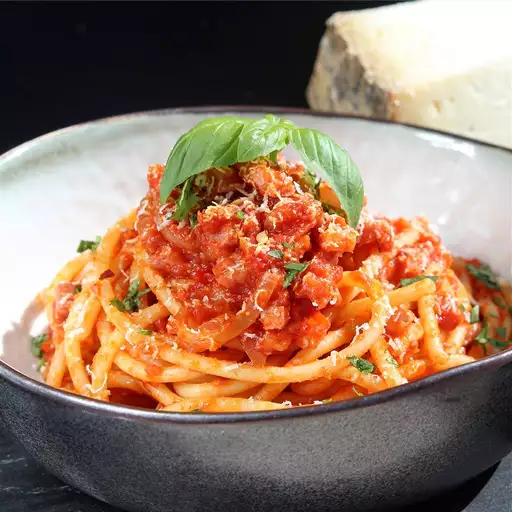

Home
Pasta Amatriciana

Description
This is the perfect pasta dish for when you want to eat something filling, but you don't have much time. While it is great to eat all year round, if you want to enjoy it at its fullest, then you should eat it in the summer when the tomatoes are at their sweetest and the basil is at its freshest. You will also notice that the recipe calls for adding salt only to water. This is because some of the ingredients such as the guanciale and pecorino cheese are already naturally salty. If making your own adjustments to the recipe keep this in mind.
This recipe is adapted from another one found on the Giallo Zafferano website.
Ingredients
Recipe serves 3
- 320g Pasta of your choice
- 150g Guanciale (pancetta also works)
- 50ml White wine
- 400g Crushed, peeled tomatoes
- 1/4 Onion
- 75g Pecorino Romano cheese
- Black pepper
- Salt
Steps
- Put the water for the pasta to boil and add a generous amount of salt to it.
- Cut the guanciale lengthwise into 1cm wide strips. We want each strip to have a good amount of both meat and fat. Brown the guanciale strips on a pan, on low heat for around 7 minutes or until the guanciale is sufficiently crispy and the fat has rendered enough to your liking.
- Take the guanciale off the pan and put to the side. Depending on how you like it, either remove the rendered fat or leave it to cook the other ingredients in.
- Add the onions and saute them for around 7 minutes or until they soften.
- Deglaze the pan by adding the white wine and increase the heat to high. Once a little bit of the wine has evaporated, add the tomatoes and the black pepper. Add your pasta of choice into the pot with boiling water and cook until al dente. In the meantime grate the pecorino cheese.
- Once the pasta is al dente drain most of the water, leaving a little to add to the sauce. Add the pasta and the remaining pasta water to the pan.
- Add the pecorino cheese and guanciale to the pan and quickly mix everything together.
- Serve the pasta, adding a finishing touch of more pecorino cheese and black pepper if you'd like.
Image source